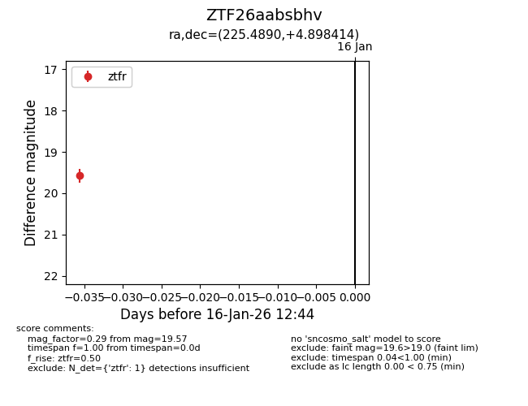
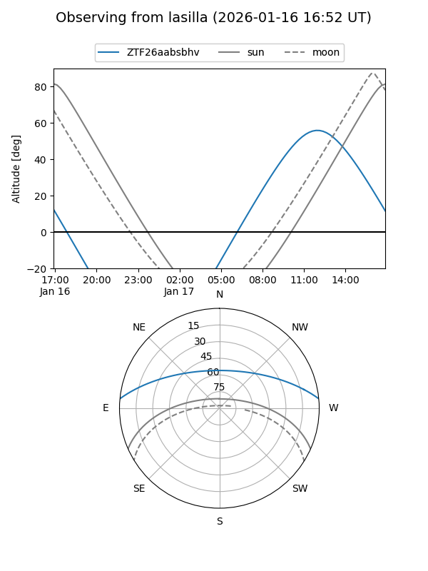
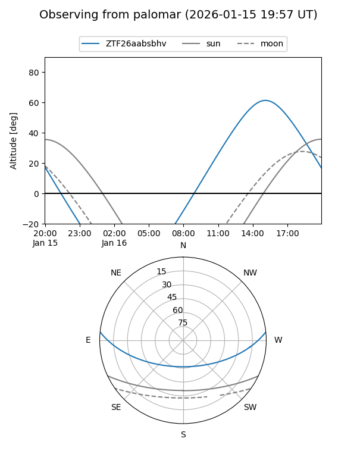

ZTF26aabsbhv
Target ZTF26aabsbhv at 2026-01-16 12:45
Aliases and brokers:
FINK: link
Lasair: link
ALeRCE: link
alt names
ZTF26aabsbhv (ztf,fink_ztf)
Coordinates:
equatorial (ra, dec) = 225.4890,+4.89841
equatorial (HMS+DMS) = 15:01:57.36,+04:53:54.29
galactic (l, b) = (3.2169,+51.78770)
Flags:
Photometry:
last ztfr=19.57
1 ztfr detections
Lightcurve

Visibility


Additional plots